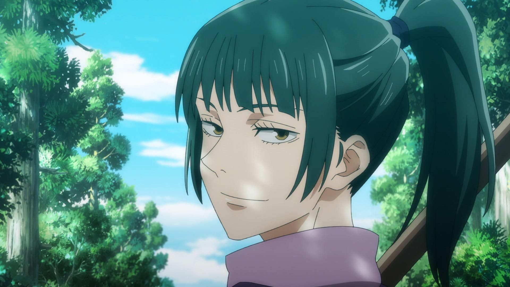
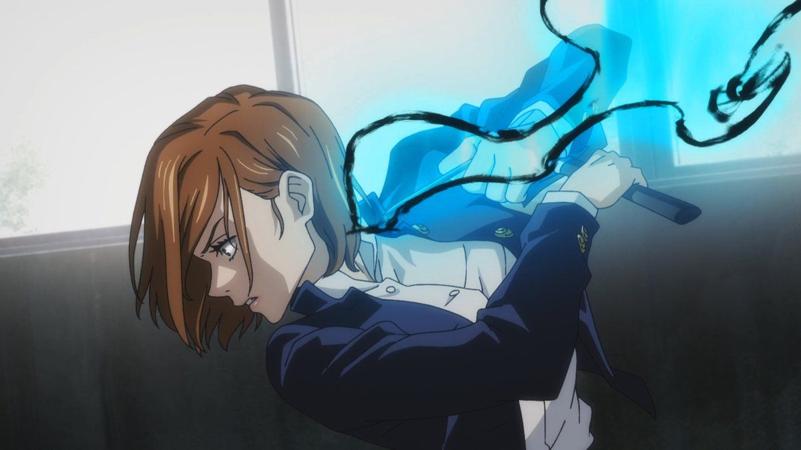
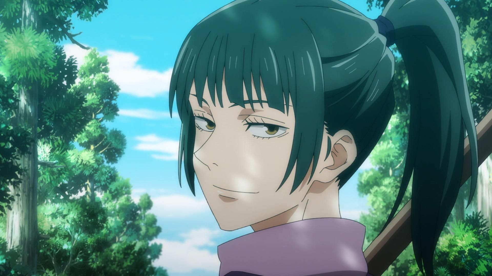
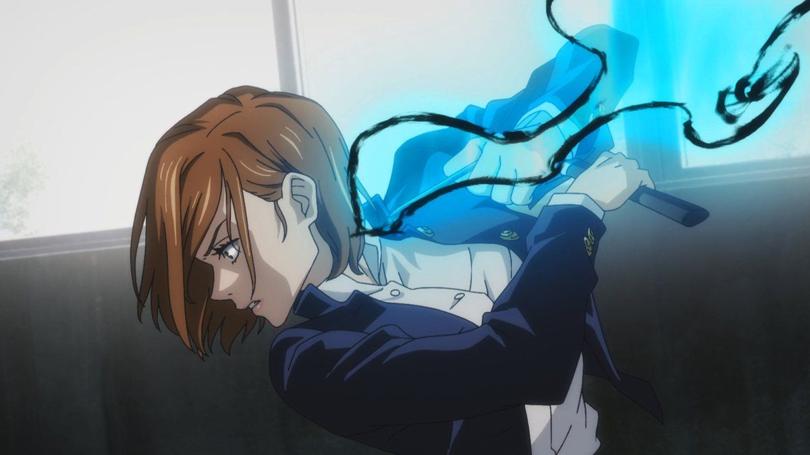

En esta página podrás conocer a las chicas de anime más famosas actualmente, además de encontrar sus descripciones y fondos de pantalla.
Bienvenid@s a la página!
Sobre este proyecto
Esta "Fan Page" es un proyecto escolar con el cual se busca practicar para desarrollar webs a nivel profesional.
Se combinan HTML5 semántico junto con CSS3 y Javascript, el cual ayuda a que los elementos visuales se vean de una manera óptima tanto en la versión móvil/tablet, así como en la versión de escritorio. Incorpora distintos botónes con enlaces a las subpáginas en el menú hamburguesa, así como elementos como el reproductor de música, carrusel de imagenes y botón de curiosidades que son ayudados por javascript.
Galería de Imágenes


 



Música de Fondo
Cargando música...